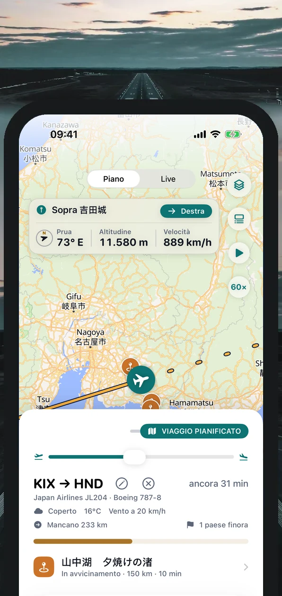
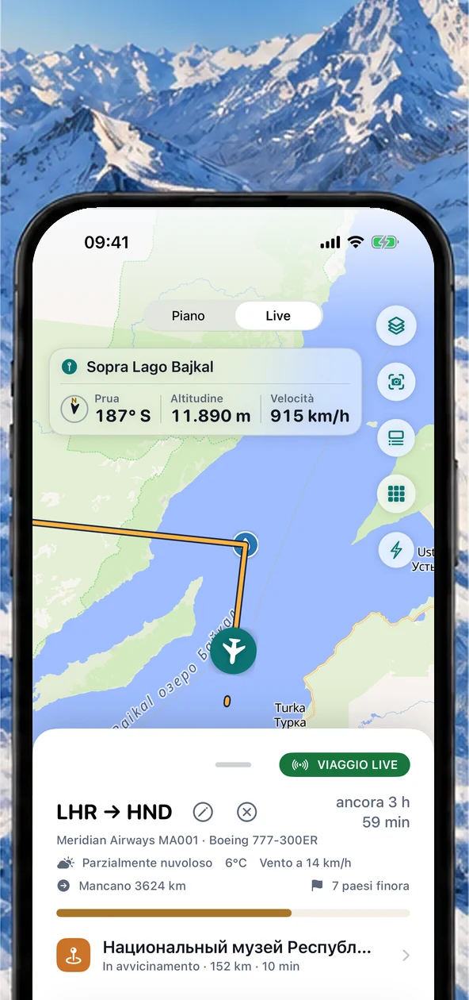
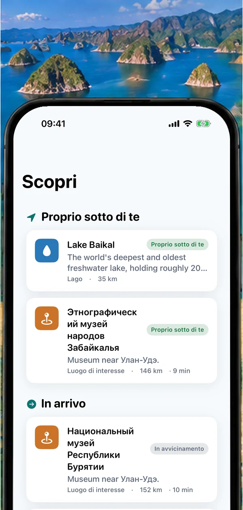
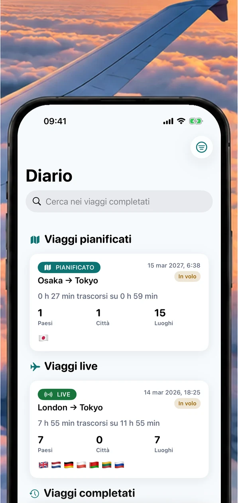
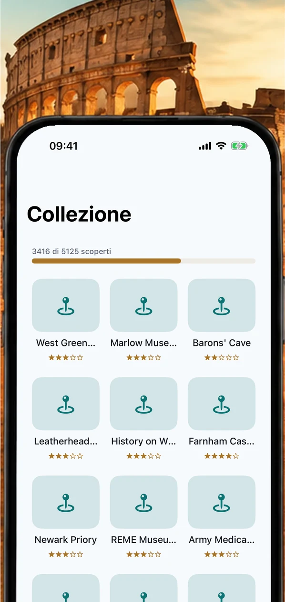
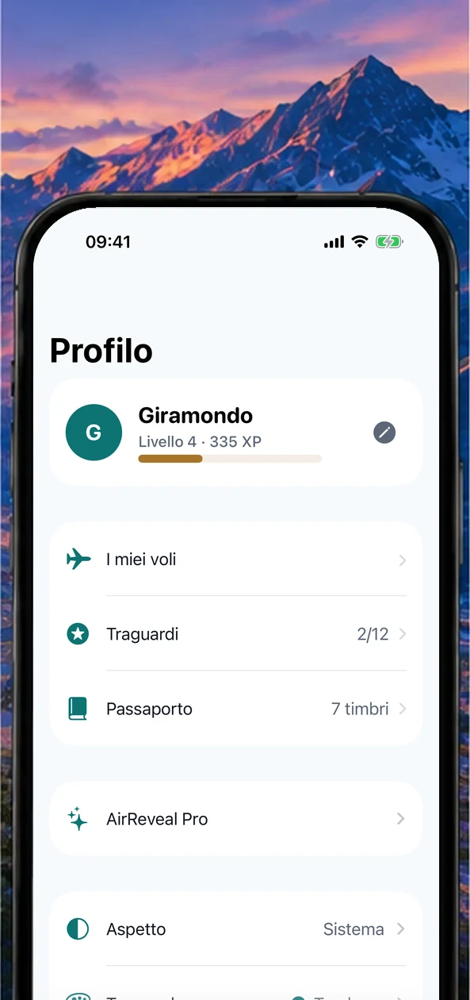
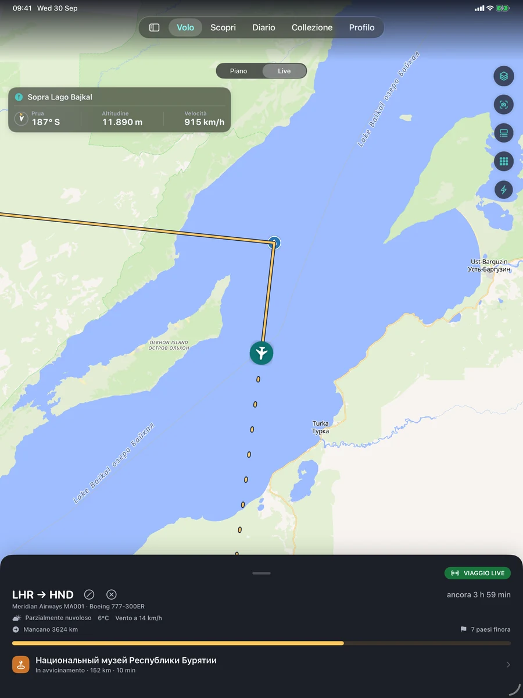
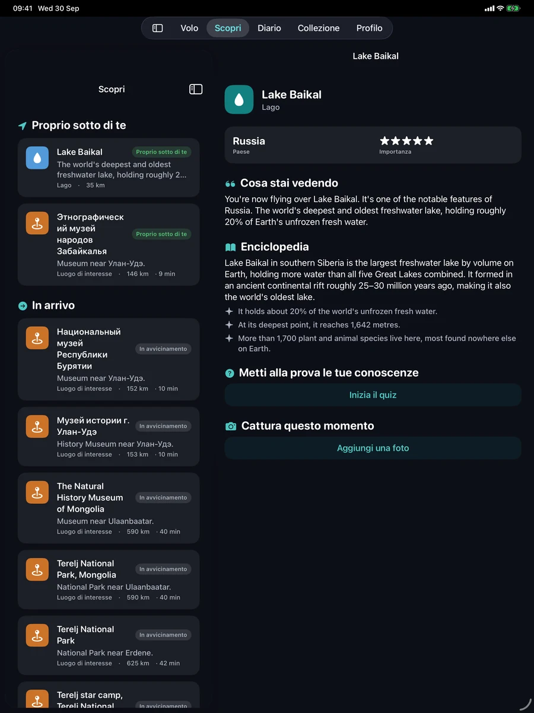
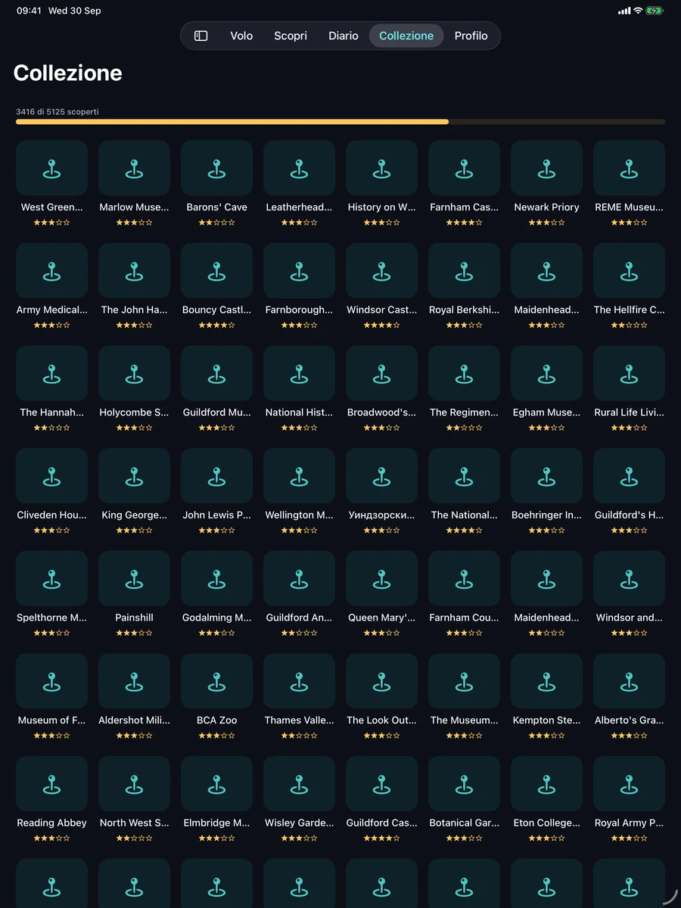

Sotto di te
In volo: cosa stai sorvolando, da che lato guardare e una fotocamera che lo indica.
Il tuo volo e gli aerei intorno a te, in un'unica app. Guarda giù dal tuo posto e AirReveal dà un nome al mondo sotto di te. Guarda su da terra e ti svela l'aereo che passa.
In volo: cosa stai sorvolando, da che lato guardare e una fotocamera che lo indica.
A terra: tutti gli aerei intorno a te su un radar e una mappa in diretta. Toccane uno per svelarne il volo, poi seguilo.
Segui il tuo volo via GPS, anche in modalità aereo, e AirReveal dà un nome a montagne, città e coste sotto di te mentre passi.
La tua posizione su una mappa a schermo intero, senza Wi-Fi a bordo.
Percorri tutta la rotta prima di partire e guarda cosa ti aspetta.
Avvicina il telefono al finestrino: i luoghi fuori sono indicati sull'immagine della fotocamera.
Sinistra o destra, quali luoghi vedrai e se vedrai il tramonto.
Altitudine, velocità e rotta sulla mappa e sulla schermata di blocco.
Ogni viaggio salvato, da rivivere da dove l'avevi lasciato.
Sopra di te ora mostra tutti gli aerei intorno a te su un radar e una mappa in diretta, con dati di volo gratuiti della community. Toccane uno per svelarlo.
L'aereo più vicino, a che distanza e in che direzione, con il radar che ruota verso dove guardi.
Scegli il tipo di mappa; dopo il tramonto, Luci notturne mostra le strade illuminate.
Punta al cielo e gli aerei vengono segnati, con una freccia verso quello che segui.
Una foto proprio di quell'aereo, la sua rotta, quota, velocità e modello.
Tieni un aereo sulla mappa fino a 800 km, lungo la rotta che ha davvero volato.
Con la loro icona, dall'eliambulanza al controllo del traffico.
Il radar al polso, un tocco quando l'aereo che segui si avvicina e l'avanzamento del tuo volo.
Sopra di te sulla schermata Home e su quella di blocco, con il radar.
L'aereo che segui sulla schermata di blocco e nella Dynamic Island: a che distanza, in che direzione, a che quota.
Il tuo Watch chiede all'iPhone, non a Internet. Con il monitoraggio spento non si scarica nulla.
Ogni gioco funziona sui tuoi voli e con gli aerei sopra di te, tutto sul tuo iPhone.
Ogni aereo che sveli, con i tuoi record: il più alto, il più veloce, il più vicino.
Bingo delle scoperte in volo; Bingo del cielo da casa: un elicottero, un volo cargo, un jumbo.
Tre piccole al giorno, nuove a mezzanotte.
Aerei comuni, rari o leggendari, e una domanda veloce su ogni modello.
Non fa per te? Disattiva i giochi in Impostazioni › Giochi per un semplice tracker di voli. Il tuo diario resta.
Scegli uno stile e ogni schermata lo segue, dal tabellone Sopra di te alle impostazioni. Tutti rispettano gli stessi standard di accessibilità.
I tabelloni delle partenze a palette: ambra su nero.
Uno schermo aeroportuale moderno: bianco e oro su blu notte.
Schede nel tuo tema di colore, in modalità chiara o scura.
Dove sei, cosa c'è sotto e qualche curiosità su tutto questo, in un'app serena e facile da usare a qualsiasi età.
Vedi in anteprima la tua rotta prima ancora di arrivare in aeroporto, poi scorri lungo tutto il percorso per vedere cosa ti aspetta.

Tracciamento del volo in tempo reale, mappe bellissime e viste mozzafiato, anche offline.

Luoghi affascinanti, città e meraviglie naturali in tempo reale.

Rivivi i tuoi viaggi e colleziona i luoghi che li hanno resi speciali.

Trasforma i tuoi viaggi in una mappa personale del mondo.

Gioca ai quiz sui luoghi e al Bingo delle scoperte, ottieni traguardi e timbra il tuo passaporto.

Non serve sapere nulla di aerei per goderti AirReveal. Se ti è mai venuta la curiosità di sapere cosa c'è laggiù, fa per te.
Altitudine, velocità al suolo e prua, il tuo tipo di aereo e numero di volo, e un registro di ogni viaggio fatto.
Anche la tratta che fai ogni settimana sorvola qualcosa di nuovo. Scaricala prima dell'imbarco e controlla i progressi a colpo d'occhio dalla schermata di blocco.
Condividi il finestrino con il Bingo delle scoperte e quiz veloci. A turno, a chi completa prima una riga, e all'atterraggio condividi il riepilogo del viaggio.
Tre domande veloci su ogni luogo, traguardi da sbloccare e un timbro sul passaporto per ogni paese sorvolato. Schermate chiare e semplici, senza gergo tecnico, e testo che si ingrandisce con le impostazioni del dispositivo.
Un'esperienza adattiva progettata attorno al dispositivo che hai in mano, da una rapida occhiata su iPhone a una grande mappa di volo su iPad.



Ogni posto al finestrino pone la stessa domanda. AirReveal risponde: la tua posizione in tempo reale sulla mappa, i luoghi, le città e le meraviglie naturali sotto e davanti al tuo aereo e cosa arriva dopo.
Luoghi reali lungo la tua rotta, nominati mentre li sorvoli, con il GPS del tuo dispositivo.
Scopri se un luogo, o il sole dell'ora d'oro, è a sinistra o a destra, così scegli il finestrino giusto.
Una mappa di volo offline che richiede solo il GPS. Scarica i contenuti del volo prima della partenza e il gioco è fatto.
Salva ogni volo, colleziona i luoghi che hai visto e timbra il tuo passaporto dei paesi.
Apri AirReveal: usa il GPS del tuo dispositivo per collocarti sulla mappa e nominare i luoghi, le città, le coste e le meraviglie naturali sotto e davanti al tuo aereo, in tempo reale.
Sì. Il tracciamento in tempo reale usa il GPS del tuo dispositivo, che non richiede il Wi-Fi di bordo né il segnale mobile. Scarica i contenuti offline di un volo prima della partenza, così mappe e luoghi sono pronti per il viaggio.
AirReveal ti dice se un luogo, o il sole all'ora d'oro, è a sinistra o a destra del tuo aeromobile, così sai da quale finestrino guardare.
No. AirReveal è un compagno personale per il viaggio stesso. Non è un servizio ufficiale di stato dei voli, traffico aereo o sicurezza aerea: rivolgiti alla tua compagnia e all'aeroporto per gate, ritardi e indicazioni dell'equipaggio.
Sì. Salva ogni volo nel tuo diario, colleziona i luoghi che scopri, timbra il tuo passaporto dei paesi e segui i tuoi progressi con i traguardi.
Per niente. Indica da dove e verso dove voli e AirReveal fa il resto. La nostra guida all'uso (in inglese) ti accompagna passo passo e spiega termini e abbreviazioni che potresti incontrare.
Puoi pianificare e visualizzare in anteprima i voli e seguire in diretta il tuo primo volo gratuitamente. AirReveal Pro sblocca il tracciamento GPS in tempo reale continuo e l'intera esperienza in volo.
Pianifica e visualizza in anteprima i voli ed esplora l'esperienza prima del decollo.
Sblocca il tracciamento GPS in tempo reale continuo e l'intera esperienza in volo.
I prezzi sono mostrati nella tua valuta sull'App Store.
AirReveal è disponibile sull'App Store per iPhone e iPad.